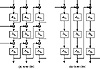
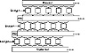

| Previous | Table of Contents | Next |
Both modes require more resources than single encryption: more hardware or more time. However, given three encryption chips, the throughput of inner-CBC is no slower than single encryption. Since the three CBC encryptions are independent, three chips can be kept busy all the time, each feeding back into itself.
On the other hand, outer-CBC feedback is outside the three encryptions. This means that even with three chips, the throughput is only one-third that of single encryption. To get the same throughput with outer-CBC, you need to interleave IVs (see Section 9.12):

Figure 15.1 Triple encryption in CBC mode.
In this case C0, C-1, and C-2 are IVs. This doesn’t help software implementations any, unless you have a parallel machine.
Unfortunately, the simpler mode is also the least secure. Biham analyzed various modes with respect to chosen-ciphertext differential cryptanalysis and found that inner-CBC is only slightly more secure than single encryption against a differential attack. If you think of triple encryption as a single larger algorithm, then inner feedbacks allow the introduction of external and known information into the inner workings of the algorithm; this facilitates cryptanalysis. The differential attacks require enormous amounts of chosen ciphertext to mount and are not very practical, but the results should be enough to give the most paranoid pause. Another analysis against meet-in-the-middle and brute-force attacks concludes that they are all equally secure [806].
There are other modes, as well. You can encrypt the entire file once in ECB, then twice in CBC; or once in CBC, once in ECB, and once in CBC; or twice in CBC and once in ECB. Biham showed that these variants are no more secure than single DES against a chosen-plaintext differential cryptanalysis attack [162]. And he doesn’t have high hopes for any other variants. If you are going to use triple encryption, use modes with outer feedback.
Variants on Triple Encryption
Before there were proofs that DES does not form a group, several schemes were proposed for multiple encryption. One way to guarantee that triple encryption doesn’t reduce to single encryption is to change the effective block size. One simple method is to add a bit of padding. Pad the text with a string of random bits, half a block in length, between the first and second and between the second and third encryptions (see Figure 15.2). If p is the padding function, then:
This padding not only disrupts patterns, but also overlaps encrypted blocks like bricks. It only adds one block to the length of the message.
Another technique, proposed by Carl Ellison, is to use some kind of keyless permutation function between the three encryptions. The permutation could work on large blocks—8 kilobytes or so—and would effectively give this variant a block size of 8 kilobytes. Assuming that the permutation is fast, this variant is not much slower than basic triple encryption.
T collects a block of input (up to 8 kilobytes in length) and uses a pseudo-random-number generator to transpose it. A 1-bit change in the input causes 8 changed output bytes after the first encryption, up to 64 changed output bytes after the second encryption, and up to 512 changed output bytes after the third encryption. If each block algorithm is in CBC mode, as originally proposed, then the effect of a single changed input bit is likely to be the entire 8 kilobyte block, even in blocks other than the first.

Figure 15.2 Triple encryption with padding.
The most recent variant of this scheme responded to Biham’s attack on inner-CBC by including a whitening pass to hide plaintext patterns. That pass is a stream XOR with a cryptographically secure random-number generator called R below. The T on either side of it prevents the cryptanalyst from knowing a priori which key was used to encrypt any given byte on input to the last encryption. The second encryption is labelled nE (encryption with one of n different keys, used cyclically):
All encryptions are in ECB mode and keys are provided at least for the n + 2 encryption keys and the cryptographically secure random-number generator.
This scheme was proposed with DES, but works with any block algorithm. I know of no analysis of the security of this scheme.
There is some argument in the academic community whether a 64-bit block is long enough. On the one hand, a 64-bit block length only diffuses plaintext over 8 bytes of ciphertext. On the other hand, a longer block length makes it harder to hide patterns securely; there is more room to make mistakes.
Some propose doubling the block length of an algorithm using multiple encryptions [299]. Before implementing any of these, look for the possibility of meet-in-the-middle attacks. Richard Outerbridge’s scheme [300], illustrated in Figure 15.3, is no more secure than single-block, two-key triple encryption [859].
However, I advise against this sort of thing. It isn’t faster than conventional triple encryption: six encryptions are still required to encrypt two blocks of data. We know the characteristics of triple encryption; constructions like this often have hidden problems.
| Previous | Table of Contents | Next |
){kind=link}
){kind=link}
){kind=link}
){kind=link}